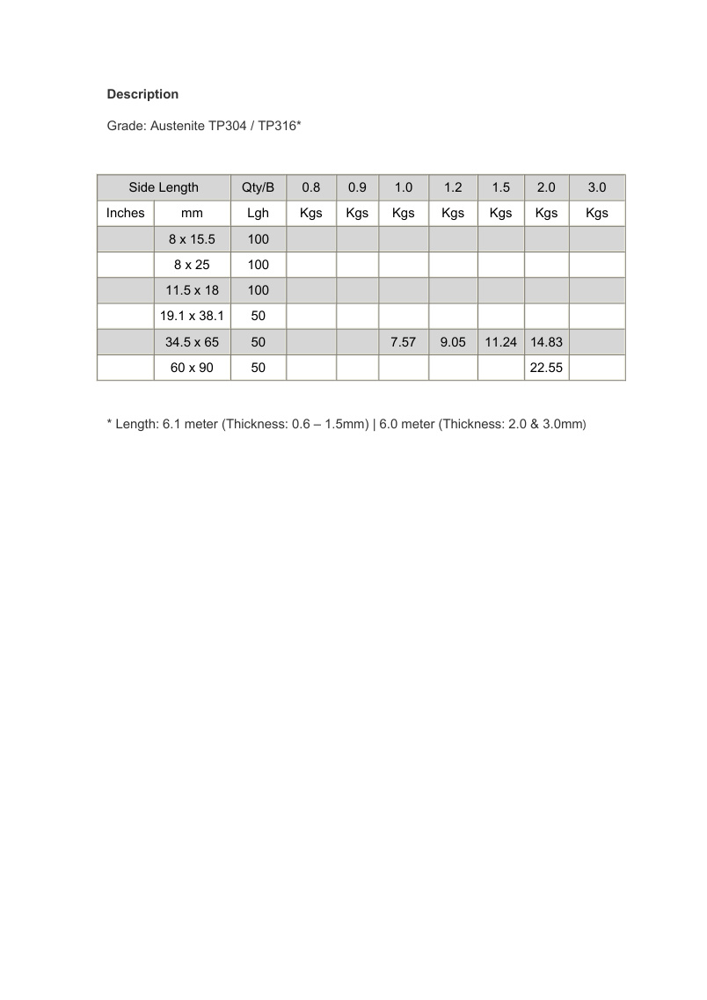

Stainless Steel Ornamental Oval Tube is supplied in Austenite TP304 / TP316 and is suitable for decorative stainless steel frames, railings, furniture and fabrication work.

Stainless Steel Ornamental Oval Tube is supplied in Austenite TP304 / TP316 and is suitable for decorative stainless steel frames, railings, furniture and fabrication work.
| Side Length (mm) | Qty/B | Available Thickness (mm) |
|---|---|---|
| 8 x 15.5 | 100 | 0.8, 0.9, 1.0, 1.2, 1.5, 2.0, 3.0 |
| 8 x 25 | 100 | 0.8, 0.9, 1.0, 1.2, 1.5, 2.0, 3.0 |
| 11.5 x 18 | 100 | 0.8, 0.9, 1.0, 1.2, 1.5, 2.0, 3.0 |
| 19.1 x 38.1 | 50 | 0.8, 0.9, 1.0, 1.2, 1.5, 2.0, 3.0 |
| 34.5 x 65 | 50 | 1.0, 1.2, 1.5, 2.0 |
| 60 x 90 | 50 | 2.0 |
Length: 6.1 meter for thickness 0.6–1.5mm; 6.0 meter for thickness 2.0 & 3.0mm. Grade: Austenite TP304 / TP316.
